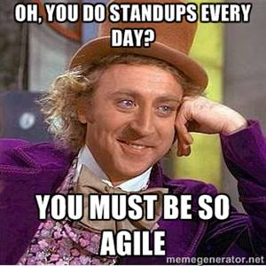
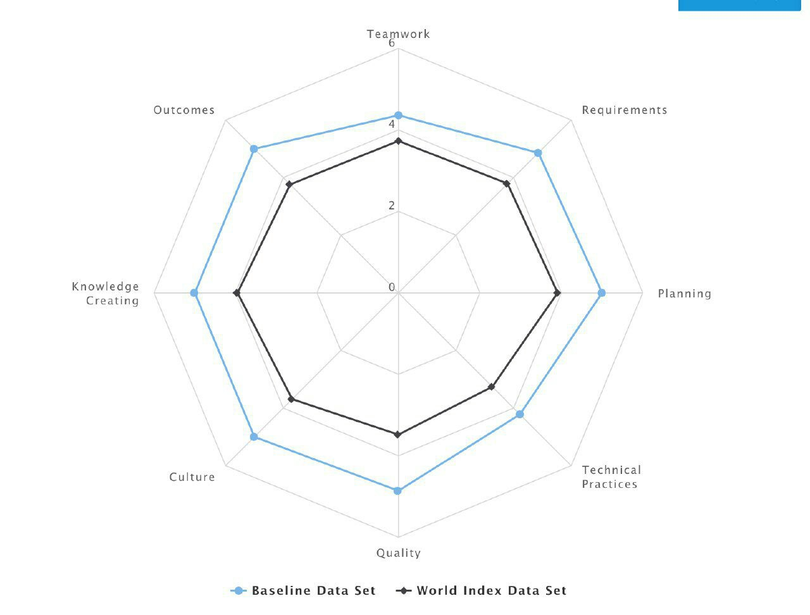
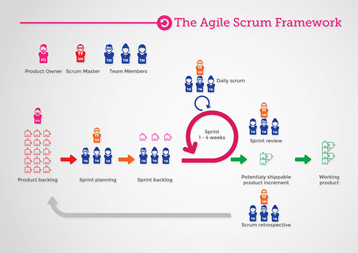
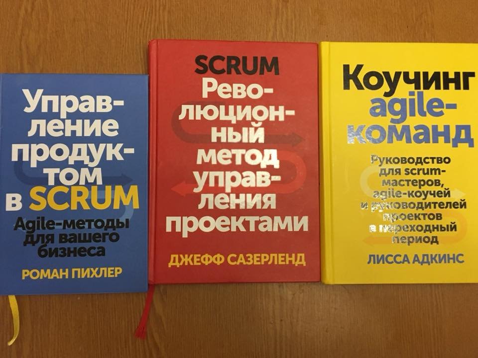
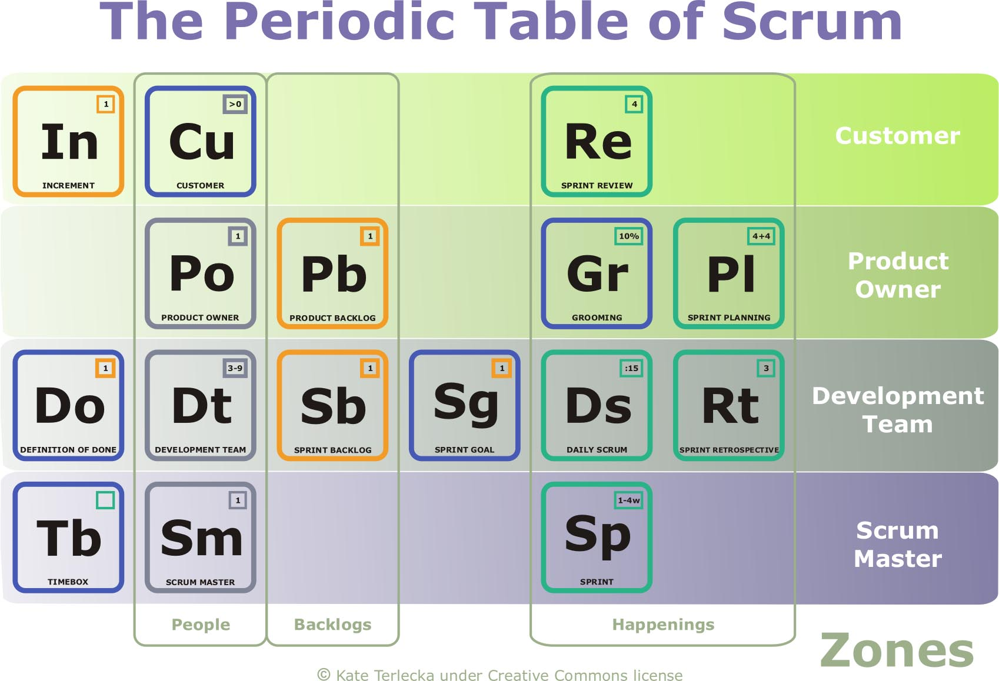
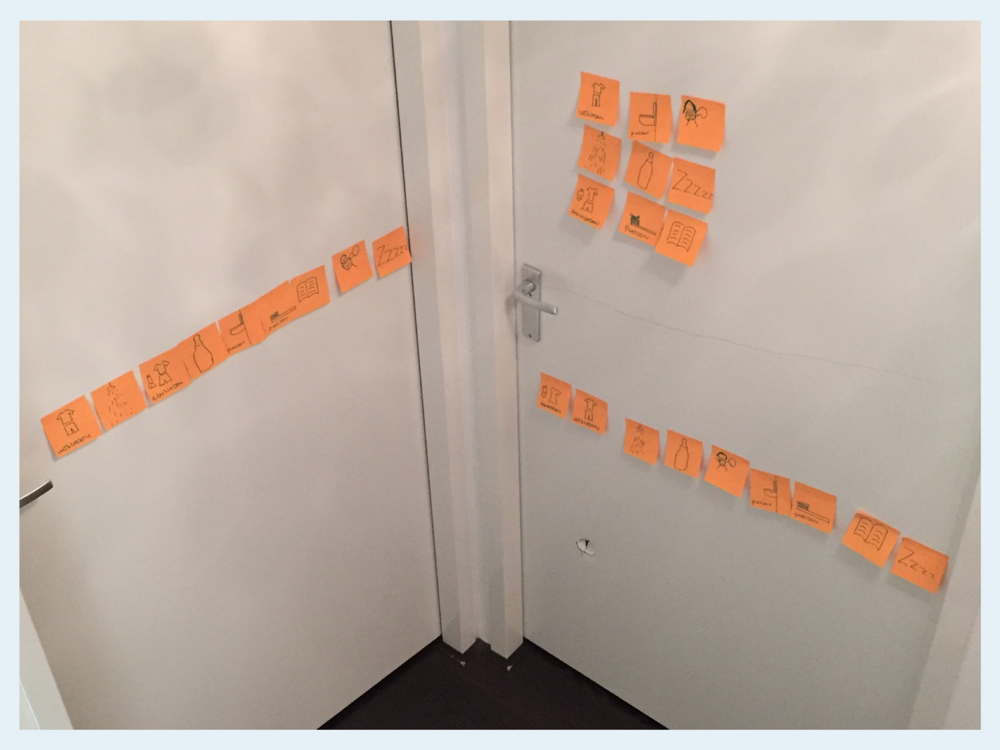
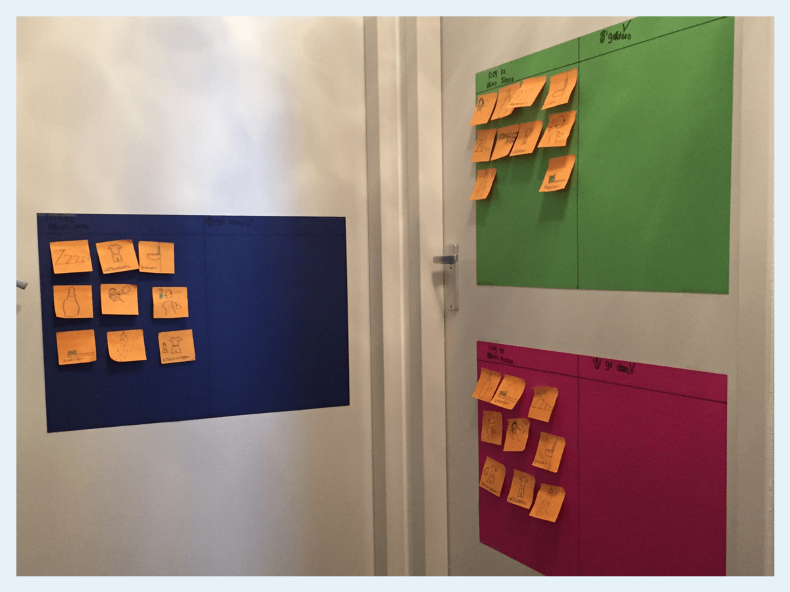
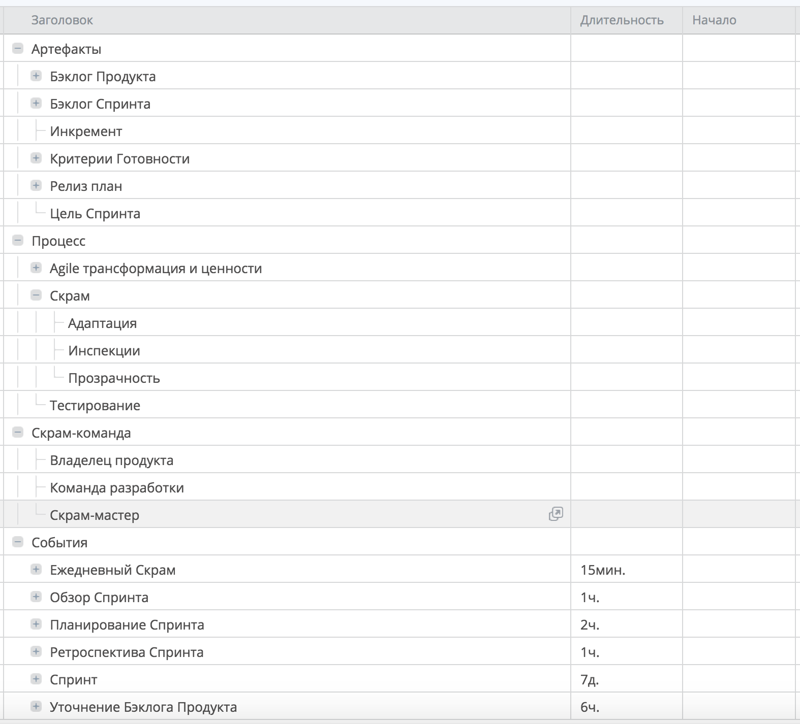

tver.io/pubconf
Ссылки на доклады
1. Keynote: Scrum on! https://tver.io/pubconf
...
3. TBA после митапа
Agile #PubConf
1 февраля '18 в Декабристе
#tverio #декабристпаб
Иван Новиков
@jonny-novikov on github
@jonny
Что будет?
3 доклада
Расписание, анонсы - tver.io в Телеграмме
Нетворкинг
Пиво со скидкой, free кола и снэки
Как в прошлый раз...
1. Отметиться о прибытии у @jonny
2. Получить купоны - скидки в баре
3. Общаться!
tver.io сегодня
123 участника на meetup.com (+41)
279 slack-пользователей (+21)
197 участников группы ВК (+9)
https://www.fb.com/io.tver (22)
telegram-бот @tverio_bot (40+)
436 email-подписчиков (SendGrid)
tver.io (август 2017)
82 участника на meetup.com (+30)
258 slack-пользователей (+45)
188 участников группы ВК (+15)
https://www.fb.com/io.tver (19)
395 email-подписчиков (SendGrid)
Надо встречаться чаще!
Help wanted! В поисках новых площадок!

Спасибо всем, кто помогает в организации!
И конечно докладчикам и всем гостям!
Scrum on!
Agenda
Не будет длинного рассказа про Scrum, ура!
Определим терминологию во избежания холиваров
Полезные ресурсы и рецепты
Feedback loop!
Долгий путь в Agile
Agile 101 метро от Agile Alliance
Но... самый короткий - через Scrum!
А я точно Agile?
Хорошо... моя компания Agile?
Можно измерить?
Домашка;) Нарисуйте карту для своей команды
Фух..
Agile... это точно не сектантство?
Неадекватные есть среди любых адептов
Если люди охотнее и лучше делают работу, это прямой результат, а не заблуждения
...
И наконец... не проще попробовать?
А если не получается?
Ну не то, чтобы такого не бывает...
Поддерживать актуальные навыки
Scrum же прост!

Но лучше подстраховаться...
ДВАЖДЫ! (teamlead, руководство)

Даже в случае Breaking Bad Experience!
Попробовать дома?
Хм... неплохо!
Главное вовремя остановиться ;)

Инструменты же не главное

А вот длина спринта не более месяца!
Встретимся через месяц на большой площадке?
Я так и думал...
А что дальше?
Q&A
Вопросы можно задать в течении вечера и в чате!
Но два сейчас...
Спасибо!
Но первый мой - кто использует Scrum?